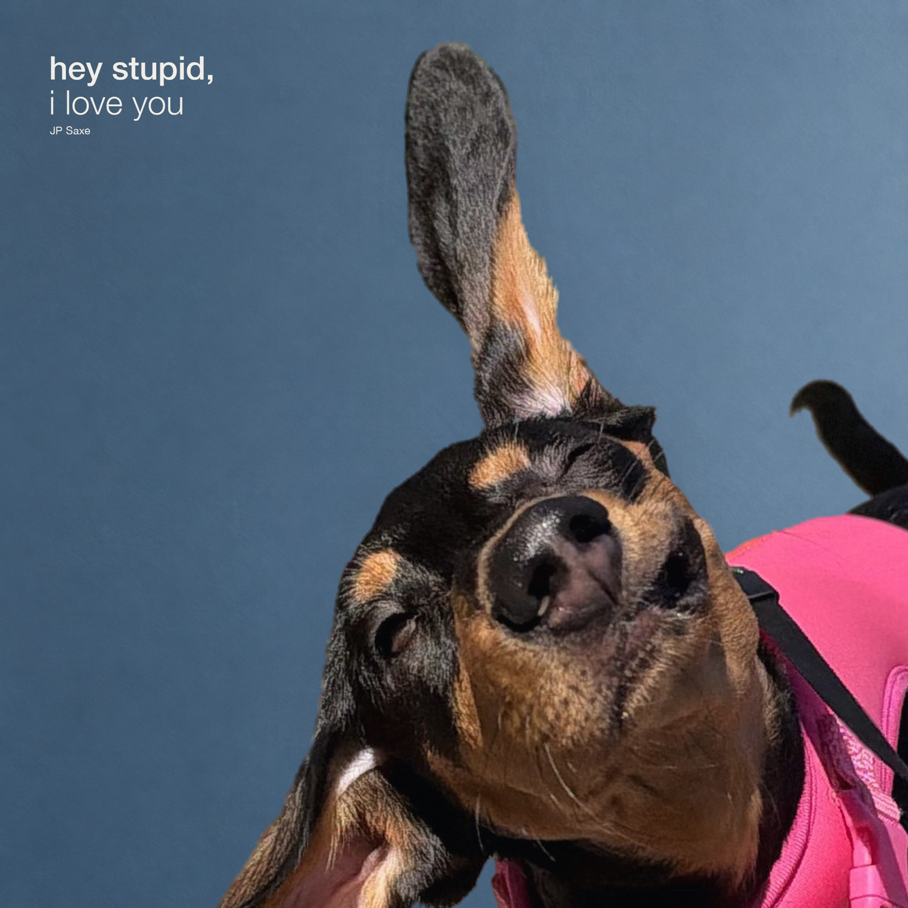
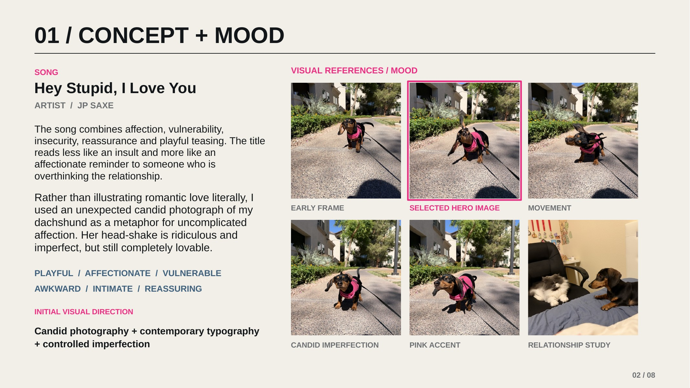
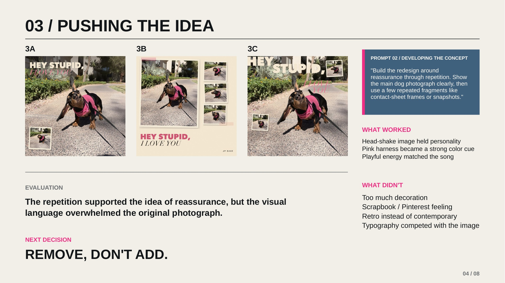
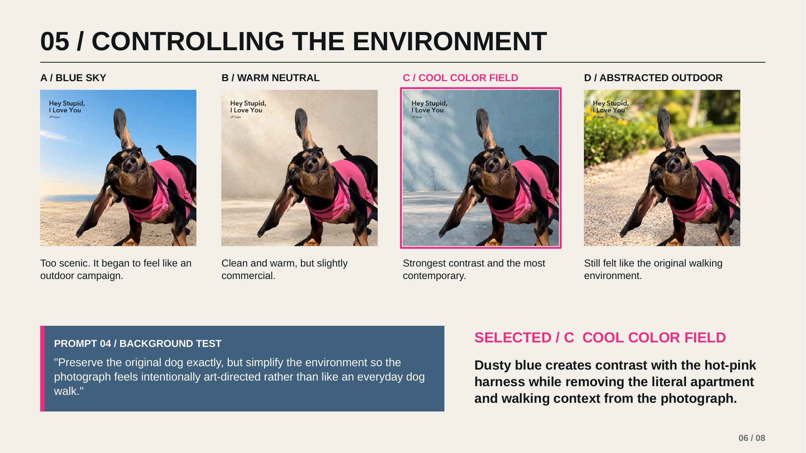
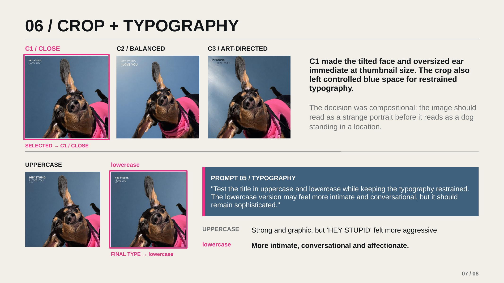

01 / Visual Communication / 2026
Hey Stupid,
I Love You
An album-cover redesign built around candid imperfection, reassurance, and the decision to remove rather than add.

A ridiculous candid moment became a metaphor for uncomplicated affection.
The song balances insecurity with reassurance. Instead of illustrating romance literally, the cover treats an awkward head-shake as something intimate, funny, and completely lovable.
Concept / Mood
Start with personality.
The tilted face, oversized ear, and hot-pink harness carried more emotional character than a polished portrait could.

Rejected Direction
The decoration overwhelmed the photograph.
Repetition supported the idea of reassurance, but the scrapbook language felt retro and made the typography compete with the image.

Background Study
Remove the literal location.
A cool blue field separated the image from its everyday dog-walk context and sharpened the contrast with the pink harness.

Crop + Typography
Closer. Quieter. More conversational.
The closest crop made the expression immediate at thumbnail size. Lowercase type softened the title and left the image in control.

Final Cover